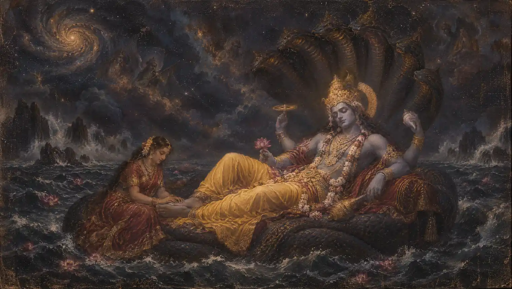

Lord Vishnu
Achyuta Ananta Govinda
Three salutations to the unfailing, infinite Lord.
Begin chantingMeaning & traditionॐ अच्युताय नमः ।
Om. Salutations to Achyuta, the unfailing one.ॐ अनन्ताय नमः ।
Om. Salutations to Ananta, the infinite one.ॐ गोविन्दाय नमः ॥
Om. Salutations to Govinda, protector of the cows.अर्थ
ॐ। अच्युत, अनन्त और गोविन्द को नमस्कार है। ये भगवान विष्णु के नाम हैं।
Oṃ acyutāya namaḥ
Om. Salutations to Achyuta, the unfailing one.Oṃ anantāya namaḥ
Om. Salutations to Ananta, the infinite one.Oṃ govindāya namaḥ
Om. Salutations to Govinda, protector of the cows.Meaning
Om. Salutations to Achyuta, the unfailing one. Om. Salutations to Ananta, the infinite one. Om. Salutations to Govinda, protector of the cows.
Om achyutaaya namah
Om. Salutations to Achyuta, the unfailing one.Om anantaaya namah
Om. Salutations to Ananta, the infinite one.Om govindaaya namah
Om. Salutations to Govinda, protector of the cows.Meaning (Hinglish)
Om. Achyut, Anant aur Govind ko namaskaar hai. Ye Bhagvaan Vishnu ke naam hain.
Infallible Vedic Remedies (Mantras for Common Problems), Swami Shantananda Puri, enlarged edition 2008, contents entry 4, printed page 39. The three invocations printed in entry 4. The preceding prose includes a traditional verse praising remembrance of these names; the chanting text here is the three-name mantra itself. English meanings are paraphrases; punctuation and Devanagari spelling are normalized.
Your daily mala
One chant, one bead.
Saved on this device. Return whenever you’re ready.
About the Achyuta Ananta Govinda
These three name mantras invoke Vishnu as Achyuta, Ananta and Govinda. The book places them in the context of achamana, a ritual of purification. They can also be read together as a brief expression of reverence.
Best time to chant: Preferably early morning, according to the book.
In your practice
- Three salutations to the unfailing, infinite Lord.
- Repeated recitation can be used as a practice of attention and devotion.
How to chant the Achyuta Ananta Govinda
Practice directions adapted from Infallible Vedic Remedies. Contents entry 4, printed pages 38–39 (PDF pages 50–51).
- The book describes performing achamana, the ritual sipping of water, once daily, preferably early in the morning.
- If following this ritual, use clean drinking water. The book directs a teaspoon of water into the right palm and then into the mouth with each of the three names: Achyuta, Ananta and Govinda.
- It asks that the spoon or hand not touch the lips and that neither be licked.
- For simple recitation, read the three invocations together; one count on this page represents the complete three-name sequence.
Extra notes for your practice
- The water-sipping directions belong to the book’s ritual practice; the simple recitation option is site guidance.
- The preceding verse praises these divine names using the language of medicine. This expresses traditional belief and is not a substitute for healthcare.
Frequently asked questions
What does Achyuta Ananta Govinda mean?
Om. Salutations to Achyuta, the unfailing one. Om. Salutations to Ananta, the infinite one. Om. Salutations to Govinda, protector of the cows.
What does one count represent?
One count represents one complete recitation of all the text displayed on this page. See How to chant for guidance on repetitions and timing. You can stop at your chosen count without completing a full mala.